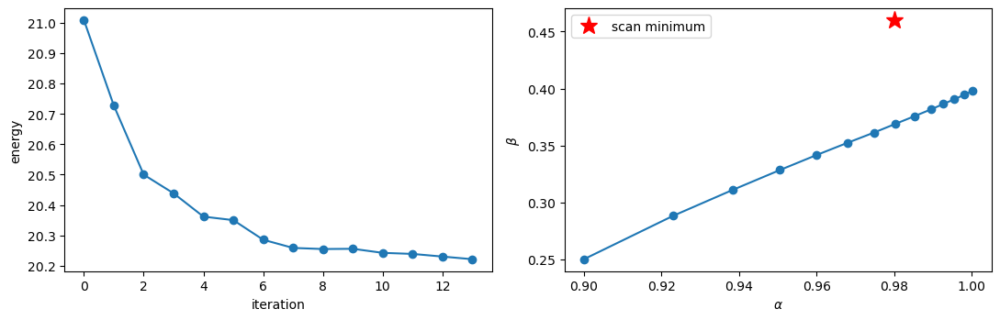
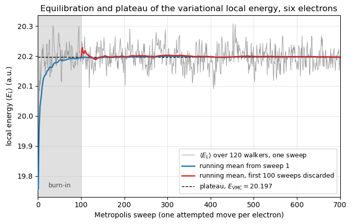
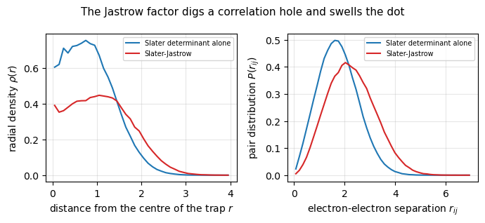

17. Applications to many-body systems: six electrons#
Executable companion to chapter 16.
Every method in this book has now been developed, and every one has been tested on a system chosen to make it easy. Hartree-Fock, MBPT and coupled cluster were applied in chapter 11 to a quantum dot in a finite oscillator basis; variational and diffusion Monte Carlo were applied in chapters 13-15 to two electrons in the same trap, where the trial function is nodeless and no determinant is needed.
Here all five meet on six electrons in a two-dimensional parabolic trap. Six is the smallest number for which none of the simplifications survive: the determinant is real, the trial function has nodes, the basis-set methods are not converged, and there is no exact answer – only five methods that fail differently, and published benchmarks.
The trial function is Slater-Jastrow,
and the linear algebra that makes it evaluable – the determinant ratio from the inverse Slater matrix, the gradient and Laplacian ratios, the factorisation \(|D| = |D_\uparrow||D_\downarrow|\) – is the material of sections 2.11 to 2.14, finally put to work.
The spin assignment is sampled as well as the positions. That turns the Moskowitz-Kalos argument into a measurement, and it behaves completely differently in the two Monte Carlo methods, which is the most interesting thing here.
import sys
import sys, os, glob
# the chapter programs live in BookPrograms/chapterNN; put them all on the path
for _d in sorted(glob.glob(os.path.join("..", "BookManybody",
"BookPrograms", "chapter*"))):
if _d not in sys.path:
sys.path.insert(0, _d)
import math
import numpy as np
import matplotlib.pyplot as plt
import manybodymc as mbmc
from manybodymc import SlaterJastrow, A_PARALLEL, A_ANTIPARALLEL, REFERENCE
from vmcoptimise import blocking
from vmc import correlation_time
import vmc as two_electron
plt.rcParams["figure.figsize"] = (7.0, 4.2)
print("cusp coefficients in 2D: antiparallel", A_ANTIPARALLEL,
" parallel", round(A_PARALLEL, 6))
print("chapter 11, N=6, 42 orbitals:", REFERENCE[6])
print("published DMC (Lohne et al. 2011): 20.1597(2)")
cusp coefficients in 2D: antiparallel 1.0 parallel 0.333333
chapter 11, N=6, 42 orbitals: {'hf': 20.72025707, 'mp2': 20.30256126, 'ccsd': 20.27324663, 'exact': None}
published DMC (Lohne et al. 2011): 20.1597(2)
17.1. 1. Verification first#
Nothing is usable until the determinant ratios and their derivatives are known to be right. Everything is analytic; everything is checked against finite differences. And for two electrons the whole machinery must collapse onto the trial function of chapter 13, where both determinants are \(1\times 1\).
rng = np.random.default_rng(5)
worst_grad = 0.0
for N in (2, 6):
for alpha, beta in ((1.0, 0.40), (0.85, 0.30)):
w = SlaterJastrow(N, alpha, beta, 1.0,
positions=rng.normal(0, 1, (N, 2)), rng=rng)
h = 1e-5
for i in range(N):
analytic = w.determinant_gradient(i) + w.jastrow_gradient(i)
fd = np.zeros(2)
for d in range(2):
w.positions[i, d] += h; w.refresh(); plus = w.log_psi()[0]
w.positions[i, d] -= 2 * h; w.refresh(); minus = w.log_psi()[0]
w.positions[i, d] += h; w.refresh()
fd[d] = (plus - minus) / (2 * h)
worst_grad = max(worst_grad, float(np.abs(analytic - fd).max()))
print(f"grad ln Psi_T vs finite differences, worst: {worst_grad:.1e}")
r = rng.normal(0, 1, (2, 2))
w = SlaterJastrow(2, 0.92, 0.31, 1.0, positions=r, rng=rng)
print(f"N=2, manybodymc.py: {w.local_energy():.12f}")
print(f"N=2, vmc.py : {two_electron.local_energy(r, 0.92, 0.31):.12f}")
grad ln Psi_T vs finite differences, worst: 4.0e-08
N=2, manybodymc.py: 2.836973119243
N=2, vmc.py : 2.836973119243
17.2. 2. Sherman-Morrison: a determinant ratio without a determinant#
Equation (2.44). Moving one particle changes one row of one spin block, so the ratio is a single dot product with the \(i\)-th column of the old inverse, and the inverse is repaired in \(O(N^2)\) by Eqs. (2.47)-(2.48) instead of recomputed in \(O(N^3)\). Two hundred consecutive accepted moves, each checked against the brute-force quotient of two determinants.
w = SlaterJastrow(6, 1.0, 0.46, 1.0, positions=rng.normal(0, 1, (6, 2)), rng=rng)
worst_R = 0.0
for _ in range(200):
i = int(rng.integers(6))
r_new = w.positions[i] + 0.3 * rng.normal(size=2)
R, values = w.ratio(i, r_new)
trial = w.positions.copy(); trial[i] = r_new
ref = SlaterJastrow(6, 1.0, 0.46, 1.0, positions=trial, spins=w.spins, rng=rng)
R_brute = ((np.linalg.det(ref.D_up) * np.linalg.det(ref.D_down))
/ (np.linalg.det(w.D_up) * np.linalg.det(w.D_down)))
worst_R = max(worst_R, abs(R - R_brute))
w.accept(i, r_new, R, values)
drift = max(np.abs(w.Dinv_up @ w.D_up - np.eye(3)).max(),
np.abs(w.Dinv_down @ w.D_down - np.eye(3)).max())
print(f"one dot product vs two determinants: {worst_R:.1e}")
print(f"|D^-1 D - 1| after 200 updates: {drift:.1e}")
one dot product vs two determinants: 7.6e-14
|D^-1 D - 1| after 200 updates: 5.6e-13
17.3. 3. The cusp coefficients are spin dependent#
Requiring the local energy to stay finite as two electrons meet gives \(a = 1/(2\ell + d - 1)\), with \(\ell = 0\) for an antiparallel pair and \(\ell = 1\) for a parallel one – the determinant already vanishes linearly there. In two dimensions that is \(a_{\uparrow\downarrow} = 1\) and \(a_{\uparrow\uparrow} = 1/3\).
The third column below repeats the parallel case with \(a = 0\), which is what one gets by assuming the determinant handles it alone.
base = rng.normal(0, 1, (6, 2)) * 1.2
rows = []
print(f"{'r_ij':>8s} {'antiparallel':>14s} {'parallel':>12s} {'parallel, a=0':>16s}")
for r12 in (1.0, 0.3, 0.1, 0.03, 0.01, 0.003):
anti = base.copy(); anti[0], anti[3] = [0.5, 0.0], [0.5 + r12, 0.0]
par = base.copy(); par[0], par[1] = [0.5, 0.0], [0.5 + r12, 0.0]
w_anti = SlaterJastrow(6, 1.0, 0.46, 1.0, positions=anti, rng=rng)
w_par = SlaterJastrow(6, 1.0, 0.46, 1.0, positions=par, rng=rng)
w_bad = SlaterJastrow(6, 1.0, 0.46, 1.0, positions=par, rng=rng)
w_bad.a = np.where(w_bad.a == A_PARALLEL, 0.0, w_bad.a)
rows.append((r12, w_anti.local_energy(), w_par.local_energy(),
w_bad.local_energy()))
print(f"{r12:8.4f} {rows[-1][1]:14.4f} {rows[-1][2]:12.4f} {rows[-1][3]:16.2f}")
r_ij antiparallel parallel parallel, a=0
1.0000 20.2161 19.8735 19.81
0.3000 23.0564 19.5647 21.65
0.1000 21.7617 19.2697 27.94
0.0300 21.6098 19.1206 51.09
0.0100 21.5737 19.0723 117.70
0.0030 21.5615 19.0548 351.01
The first two columns converge as the electrons meet; the third diverges as \(1/r_{ij}\), and the variance of the energy with it.
17.4. 4. Nodes, the drift, and what the spin move is worth#
The two-electron trial function was strictly positive. This one is not: \(|D_\uparrow|\) vanishes when the three spin-up electrons become collinear. Near that surface the quantum force \(\mathbf F = 2\nabla\ln\Psi_T\) diverges, the drift step hurls the walker across configuration space, and the local energy it reports on the way is enormous.
Two independent cures:
Cut the drift (Umrigar, Nightingale and Runge). Legitimate because the same modified drift enters both the proposal and the Green’s function, so detailed balance is untouched – the lesson of section 13.6, used on purpose.
Let the spins move. A walker near a node has small \(|\Psi_T|\), so almost any spin exchange is accepted: it can relabel its way out without moving.
print(f"{'drift':>8s} {'spins':>7s} {'energy':>22s} {'min':>10s} {'max':>10s}")
for cutoff in (False, True):
for spins in (False, True):
out = mbmc.vmc(6, 1.0, 0.46, 1.0, n_walkers=300, n_steps=400,
burn_in=120, time_step=0.05,
rng=np.random.default_rng(2024),
sample_spins=spins, drift_cutoff=cutoff)
s = out["series"]; mean, error, _ = blocking(s)
print(f"{'cut' if cutoff else 'plain':>8s} {'yes' if spins else 'no':>7s} "
f"{mean:14.4f} +/- {error:.4f} {s.min():10.3f} {s.max():10.3f}")
drift spins energy min max
plain no 20.2547 +/- 0.0498 18.547 21.439
plain yes 20.2036 +/- 0.0018 20.127 20.260
cut no 20.1956 +/- 0.0031 20.108 20.249
cut yes 20.2000 +/- 0.0018 20.135 20.261
The spin exchange alone is enough – the second row needs no drift cutoff at all – which says the pathology really is walkers dwelling near nodes rather than anything wrong in the drift formula. And where both are available the exchange is still the better of the two: its error bar is smaller by a factor between 1.3 and 1.7 across several seeds, which is a factor of two in computer time for the same accuracy. Untreated, the walker-averaged energy swings over three units and the error bar does not warn you.
The three treated rows also settle the Moskowitz-Kalos claim of section 2.13 numerically: sampling the spin assignment gives the same energy as freezing it.
17.5. 5. Optimising the trial function#
The gradient of chapter 14 carries over untouched. Only the parameter derivatives change: \(\partial\ln|D|/\partial\alpha = {\rm Tr}(D^{-1}\, \partial D/\partial\alpha)\), using the same inverse the sampling already keeps. Started deliberately far from the minimum.
theta, history = mbmc.optimise(6, 0.90, 0.25, 1.0, learning_rate=0.004,
max_iter=14, tol=0.05, n_walkers=150,
n_steps=120, rng=np.random.default_rng(7),
verbose=True)
print(f"-> alpha = {theta[0]:.4f}, beta = {theta[1]:.4f}")
params = np.array([h[0] for h in history])
energies = np.array([h[1] for h in history])
fig, (left, right) = plt.subplots(1, 2, figsize=(11.0, 3.6))
left.plot(energies, "o-")
left.set_xlabel("iteration"); left.set_ylabel("energy")
right.plot(params[:, 0], params[:, 1], "o-")
right.plot([0.98], [0.46], "r*", markersize=14, label="scan minimum")
right.set_xlabel(r"$\alpha$"); right.set_ylabel(r"$\beta$"); right.legend()
fig.tight_layout(); plt.show()
0 alpha 0.9000 beta 0.2500 E 21.008152 |grad| 11.1101
1 alpha 0.9230 beta 0.2881 E 20.727087 |grad| 6.8719
2 alpha 0.9383 beta 0.3108 E 20.499684 |grad| 5.3392
3 alpha 0.9505 beta 0.3284 E 20.438307 |grad| 4.0579
4 alpha 0.9600 beta 0.3416 E 20.361566 |grad| 3.3253
5 alpha 0.9679 beta 0.3522 E 20.350057 |grad| 2.8334
6 alpha 0.9748 beta 0.3613 E 20.285438 |grad| 2.3687
7 alpha 0.9803 beta 0.3689 E 20.258542 |grad| 2.0786
8 alpha 0.9852 beta 0.3757 E 20.254910 |grad| 1.8079
9 alpha 0.9894 beta 0.3815 E 20.255679 |grad| 1.4500
10 alpha 0.9927 beta 0.3864 E 20.242342 |grad| 1.2887
11 alpha 0.9956 beta 0.3906 E 20.238819 |grad| 1.1890
12 alpha 0.9982 beta 0.3946 E 20.230112 |grad| 0.9577
13 alpha 1.0002 beta 0.3979 E 20.221423 |grad| 1.0670
-> alpha = 1.0025, beta = 0.4015

Refining on a scan puts the minimum at \(\alpha = 0.98\), \(\beta = 0.46\), with the surface flat to \(8\times10^{-3}\) over \(\alpha\in[0.96,1.02]\).
That \(\alpha\) comes out at 1 within the noise is the physically interesting part. The optimal orbitals in the determinant are the non-interacting oscillator eigenfunctions: the Jastrow factor absorbs the effect of the interaction on the one-body part so completely that a scale parameter has nothing left to do. Harju and co-workers found the same for this system, and noted that it fails for three electrons, where the spin populations differ. Closed shells are forgiving.
17.6. 6. Variational Monte Carlo#
run = mbmc.vmc(6, 0.98, 0.46, 1.0, n_walkers=600, n_steps=900, burn_in=200,
time_step=0.05, rng=np.random.default_rng(2024))
mean, error, k = blocking(run["series"])
print(f"E_VMC = {mean:.5f} +/- {error:.5f} ({600*900} samples)")
print(f" tau {correlation_time(run['series']):.2f}, "
f"acceptance {run['acceptance']:.1%}, "
f"spin exchanges accepted {run['spin_acceptance']:.1%}")
print(f" CCSD in 42 orbitals (chapter 11): {REFERENCE[6]['ccsd']:.5f}")
print(f" published DMC : 20.1597(2)")
E_VMC = 20.19961 +/- 0.00091 (540000 samples)
tau 2.74, acceptance 97.4%, spin exchanges accepted 41.6%
CCSD in 42 orbitals (chapter 11): 20.27325
published DMC : 20.1597(2)
17.7. 7. Diffusion Monte Carlo, and a warning#
The spin-exchange move is exact in variational Monte Carlo and wrong in diffusion Monte Carlo. It satisfies detailed balance with respect to \(|\Psi_T|^2\), which is what VMC samples, and not with respect to \(f = \Psi_T\Phi\), which is what DMC samples. Applied at every step it competes with the branching and pulls the walkers back to the variational distribution.
This is not a small bias.
for spin_moves in ("always", "equilibration", "never"):
out = mbmc.dmc(6, 0.98, 0.46, 1.0, n_walkers=200, n_steps=400, burn_in=300,
time_step=0.02, rng=np.random.default_rng(2024),
spin_moves=spin_moves)
mean, error, _ = blocking(out["series"])
print(f"spin_moves = {spin_moves:<14s} E = {mean:.5f} +/- {error:.5f}")
spin_moves = always E = 20.19483 +/- 0.00321
spin_moves = equilibration E = 20.14812 +/- 0.00507
spin_moves = never E = 20.14980 +/- 0.00340
"always" returns the variational energy to within its error bar: the projection
has been undone. The remedy is to exchange during the variational equilibration,
leaving each walker in a randomised assignment, and then freeze – the ensemble
still averages over assignments and nothing interferes with the projection.
17.7.1. The time step#
Note that the equilibration is measured in imaginary time, not in steps. At \(\Delta\tau = 0.01\) a fixed number of steps covers a tenth of the imaginary time it does at \(\Delta\tau = 0.1\), and a calculation that forgets this reports the time-step error of its own unconverged projection.
# The full four-point scan is in manybodymc.py and takes a couple of minutes;
# two time steps are enough to see that there is nothing to see.
time_steps = [0.10, 0.02]
energies, errors = [], []
print(f"{'dt':>8s} {'energy':>12s} {'error':>10s} {'acceptance':>12s}")
for dt in time_steps:
out = mbmc.dmc(6, 0.98, 0.46, 1.0, n_walkers=250, n_steps=500,
burn_in=max(120, int(5.0 / dt)), time_step=dt,
rng=np.random.default_rng(2024), spin_moves="never")
mean, error, _ = blocking(out["series"])
energies.append(mean); errors.append(error)
print(f"{dt:8.3f} {mean:12.5f} {error:10.5f} {out['acceptance']:11.1%}")
print()
print("manybodymc.py, all four time steps, weighted mean: 20.16125 +/- 0.00151")
print("published (Lohne et al. 2011): 20.1597(2)")
dt energy error acceptance
0.100 20.16003 0.00230 94.3%
0.020 20.15882 0.00327 99.2%
manybodymc.py, all four time steps, weighted mean: 20.16125 +/- 0.00151
published (Lohne et al. 2011): 20.1597(2)
No time-step dependence survives the error bars, and the weighted mean agrees with the published fixed-node result at one standard error.
17.8. 8. The comparison#
method |
energy |
basis |
|---|---|---|
Hartree-Fock |
20.72026 |
42 orbitals |
MP2 |
20.30256 |
42 orbitals |
CCSD |
20.27325 |
42 orbitals |
CCSD |
20.1737 |
20 shells (Lohne et al.) |
\(\Lambda\)-CCSD(T) |
20.1582 |
20 shells (Lohne et al.) |
VMC, this chapter |
20.19961(91) |
none |
DMC, this chapter |
20.16125(151) |
none |
DMC, published |
20.1597(2) |
none |
Three things, different in kind.
The basis is the limitation, not the method. CCSD in 42 orbitals is 0.11 above CCSD in twenty shells; almost the whole apparent gap between coupled cluster and Monte Carlo is that, not a failure of the cluster expansion. Read the other way: at convergence, \(\Lambda\)-CCSD(T) and diffusion Monte Carlo – sharing no approximation whatever – agree to \(1.5\times10^{-3}\) on a system with no exact solution. That agreement is the real result, and neither method could establish it alone.
The Monte Carlo hierarchy behaves as advertised. VMC is an upper bound, DMC improves on it by 0.038, and DMC is itself an upper bound because the nodes are approximate.
The remaining error is nodal. Both Monte Carlo numbers rest on a single determinant of oscillator orbitals, whose node is the condition that three same-spin electrons be collinear. That was never optimised and, within this ansatz, cannot be. It is the last uncontrolled approximation in the book.
17.9. 9. Dependence on the confinement#
Running the full \(\omega\) scan takes a few minutes, so the numbers below come
from manybodymc.py rather than from this notebook. Parameters are
\(\alpha = 0.98\), \(\beta = 0.46\sqrt{\omega}\) – the oscillator length is
\(\omega^{-1/2}\), so that is the only scaling the Jastrow range needs.
\(\hbar\omega\) |
HF |
MP2 |
CCSD |
VMC |
DMC |
|---|---|---|---|---|---|
0.25 |
7.39179 |
7.06226 |
7.03671 |
7.02274(89) |
6.98238(106) |
0.50 |
12.27150 |
11.89288 |
11.86345 |
11.82437(199) |
11.78488(116) |
1.00 |
20.72026 |
20.30256 |
20.27325 |
20.19961(91) |
20.15960(278) |
2.00 |
35.67233 |
35.22533 |
35.19959 |
35.09581(341) |
35.04162(394) |
4.00 |
62.74116 |
62.27348 |
62.25276 |
62.11527(657) |
62.05754(472) |
The ordering HF > MP2 > CCSD > VMC > DMC holds at every frequency, and the gap between the coupled-cluster and Monte Carlo columns widens as \(\omega\) falls (0.014 at \(\omega = 4\), 0.054 at \(\omega = 0.25\)): a shallow trap is more strongly correlated and the finite basis is worse there.
An honest discrepancy. At \(\hbar\omega = 0.5\) the published DMC value is 11.7888(2) and the table gives 11.78488(116) – below it, which is impossible for two calculations sharing the same nodes, since fixed-node energies are upper bounds. The culprit is population control: repeating that point with 250 walkers gives 11.77981(144) and with 800 gives 11.78543(149). The energy climbs as the population grows, which is the standard signature and direction of population-control bias. At \(\hbar\omega = 1\) the same test finds no movement between 100 and 400 walkers, because the local energy fluctuates less and the branching is gentler. The bias is \(O(1/N_{\rm walkers})\) and would be removed by larger populations; it is left visible because a residual of \(4\times10^{-3}\) is exactly what a table of six-digit numbers is apt to conceal.
17.10. 10. Two pictures of the six-electron dot#
The sections above report numbers. The two figures here show what the numbers are made of. Both come from short runs – a few hundred sweeps with a couple of hundred walkers – which is enough to show the behaviour and nowhere near enough for a production error bar.
17.10.1. The local energy along a run#
Every variational average in this notebook is the mean of a time series, and the
series has two parts which must be kept apart. The walkers start life in a
Gaussian cloud that is not distributed as \(|\Psi_T|^2\), so the first few tens
of sweeps carry a transient; after that the series fluctuates about a plateau,
and the only remaining question is how strongly successive sweeps are
correlated. The run below is started with burn_in=0 precisely so that the
transient is kept and can be looked at, rather than discarded silently.
trace = mbmc.vmc(6, 0.98, 0.46, 1.0, n_walkers=120, n_steps=700, burn_in=0,
time_step=0.05, rng=np.random.default_rng(2024))
series = trace["series"]
sweeps = np.arange(1, series.size + 1)
running = np.cumsum(series) / sweeps
discard = 100
tail = series[discard:]
running_tail = np.cumsum(tail) / np.arange(1, tail.size + 1)
plateau, error, _ = blocking(tail)
print(f"plateau after discarding {discard} sweeps: {plateau:.4f} +/- {error:.4f}")
print(f" correlation time tau = {correlation_time(tail):.2f} sweeps, "
f"acceptance {trace['acceptance']:.1%}")
for k in (100, 200, 400, 700):
print(f" running mean including the burn-in at sweep {k:3d}: "
f"{running[k-1]:.4f} ({running[k-1] - plateau:+.4f})")
fig, ax = plt.subplots(figsize=(7.0, 4.5))
ax.axvspan(0, discard, color="0.88", zorder=0)
ax.plot(sweeps, series, color="0.6", lw=0.7, zorder=1,
label=r"$\langle E_L\rangle$ over 120 walkers, one sweep")
ax.plot(sweeps, running, "C0-", lw=1.8, zorder=3,
label="running mean from sweep 1")
ax.plot(sweeps[discard:], running_tail, "C3-", lw=1.8, zorder=3,
label=f"running mean, first {discard} sweeps discarded")
ax.axhline(plateau, color="k", ls="--", lw=1.0, zorder=2,
label=fr"plateau, $E_{{\rm VMC}} = {plateau:.3f}$")
ax.text(discard / 2, series.min(), "burn-in", ha="center", va="bottom",
fontsize=9, color="0.3")
ax.set_xlim(0, series.size)
ax.set_xlabel("Metropolis sweep (one attempted move per electron)")
ax.set_ylabel(r"local energy $\langle E_L\rangle$ (a.u.)")
ax.set_title("Equilibration and plateau of the variational local energy, "
"six electrons")
ax.legend(loc="lower right", fontsize=9)
ax.grid(alpha=0.3)
fig.tight_layout()
plt.show()
plateau after discarding 100 sweeps: 20.1968 +/- 0.0024
correlation time tau = 3.87 sweeps, acceptance 97.4%
running mean including the burn-in at sweep 100: 20.1940 (-0.0028)
running mean including the burn-in at sweep 200: 20.1963 (-0.0005)
running mean including the burn-in at sweep 400: 20.1969 (+0.0001)
running mean including the burn-in at sweep 700: 20.1964 (-0.0004)

The transient is over in some thirty sweeps, and the two running means say what discarding it is worth: the mean that keeps the burn-in is still about one standard error low at sweep 100 and is indistinguishable from the plateau by sweep 400. That the effect is this small is luck rather than virtue – the initial Gaussian cloud happens to be a fair approximation to \(|\Psi_T|^2\) for a trap of \(\hbar\omega = 1\) – and the same picture drawn for a shallow trap, or from a deliberately bad start, would show a transient worth many error bars.
The grey curve also shows why the error bar cannot be read off the scatter.
correlation_time returns \(\tau = 1 + 2\sum_d\kappa_d \approx 3.9\), so the naive
standard error of \(N\) points understates the true one by \(\sqrt{\tau}\approx 2\);
that is what blocking is for, and it is the reason every number in this
notebook is quoted through it.
17.10.2. The Jastrow factor, seen#
The Jastrow factor is usually justified by what it does to the energy. It is more instructive to look at what it does to the electrons. We sample the same six-electron dot twice, with the same importance-sampled sweep and the same seed: once from \(|D_\uparrow D_\downarrow|^2\) alone – the bare determinant of oscillator orbitals, obtained by setting every cusp coefficient \(a_{ij}\) to zero – and once from the full \(|\Psi_T|^2\). Nothing else differs.
class DeterminantOnly(mbmc.Ensemble):
"""The same ensemble with the Jastrow factor switched off, $a_{ij} = 0$."""
def _cusp(self, spins):
return np.zeros(spins.shape + (spins.shape[1],))
def collect(ens, n_steps=300, burn_in=60, time_step=0.05, every=4, seed=11):
"""Sweep with the chapter's own drifting move, binning radii and pair
separations every few sweeps. A short run, enough to show the behaviour."""
rng = np.random.default_rng(seed)
positions, spins = ens.positions.copy(), ens.spins.copy()
log_psi = ens.log_psi(positions, spins)
force = ens.quantum_force(positions, spins)
upper = np.triu_indices(ens.N, 1)
radii, separations = [], []
for step in range(burn_in + n_steps):
positions, log_psi, force, _, _, _ = mbmc._spatial_sweep(
ens, positions, spins, log_psi, force, time_step, rng)
if step >= burn_in and step % every == 0:
radii.append(np.linalg.norm(positions, axis=2).ravel())
delta = positions[:, :, None, :] - positions[:, None, :, :]
separations.append(
np.linalg.norm(delta, axis=-1)[:, upper[0], upper[1]].ravel())
return np.concatenate(radii), np.concatenate(separations)
samples = {}
for label, factory in (("Slater determinant alone", DeterminantOnly),
("Slater-Jastrow", mbmc.Ensemble)):
ens = factory(250, 6, 0.98, 0.46, 1.0, np.random.default_rng(2024))
samples[label] = collect(ens)
r, s = samples[label]
print(f"{label:<26s} <r> = {r.mean():.4f} <r_ij> = {s.mean():.4f}")
edges = np.linspace(0.0, 4.0, 41)
centres = 0.5 * (edges[1:] + edges[:-1])
rings = np.pi * (edges[1:] ** 2 - edges[:-1] ** 2)
pair_edges = np.linspace(0.0, 7.0, 51)
pair_centres = 0.5 * (pair_edges[1:] + pair_edges[:-1])
fig, (left, right) = plt.subplots(1, 2, figsize=(7.0, 3.2))
for (label, (r, s)), colour in zip(samples.items(), ("C0", "C3")):
counts, _ = np.histogram(r, bins=edges)
left.plot(centres, 6.0 * counts / counts.sum() / rings, colour, label=label)
height, _ = np.histogram(s, bins=pair_edges, density=True)
right.plot(pair_centres, height, colour, label=label)
left.set_xlabel(r"distance from the centre of the trap $r$")
left.set_ylabel(r"radial density $\rho(r)$")
left.legend(fontsize=7)
left.grid(alpha=0.3)
right.set_xlabel(r"electron-electron separation $r_{ij}$")
right.set_ylabel(r"pair distribution $P(r_{ij})$")
right.legend(fontsize=7)
right.grid(alpha=0.3)
fig.suptitle("The Jastrow factor digs a correlation hole and swells the dot",
fontsize=11)
fig.tight_layout()
plt.show()
Slater determinant alone <r> = 1.1932 <r_ij> = 1.7496
Slater-Jastrow <r> = 1.5104 <r_ij> = 2.2643

The two panels are the same effect seen twice. The Jastrow factor suppresses configurations in which two electrons are close: the pair distribution loses its weight below \(r_{ij}\approx 2\) and gains it above, and the mean separation goes from 1.75 to 2.26. Since the electrons keep out of each other’s way by moving outwards, the density flattens and spreads and the mean radius grows from 1.19 to 1.51 – the dot swells by a quarter, at fixed confinement, purely from correlation.
The determinant alone cannot do this. It keeps parallel spins apart, which is the exchange hole and is already in the blue curves; what it says about an up and a down electron meeting is nothing at all. That is the gap \(a_{\uparrow\downarrow} = 1\) is there to fill, and the reason the cusp coefficients of section 3 had to be spin dependent.